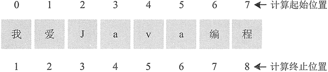

Java截取（提取）子字符串（substring()）
在 String 中提供了两个截取字符串的方法，一个是从指定位置截取到字符串结尾，另一个是截取指定范围的内容。下面对这两种方法分别进行介绍。
这里需要特别注意的是， 对于开始位置 beginIndex， Java 是基于字符串的首字符索引为 0 处理的，但是对于结束位置 endIndex，Java 是基于字符串的首字符索引为 1 来处理的，如图 1 所示。
注意：substring() 方法是按字符截取，而不是按字节截取。
1. substring(int beginIndex) 形式
此方式用于提取从索引位置开始至结尾处的字符串部分。调用时，括号中是需要提取字符串的开始位置，方法的返回值是提取的字符串。例如：String str = "我爱 Java 编程"; String result = str.substring(3); System.out.println(result); // 输出：Java 编程
2. substring(int beginIndex，int endIndex) 形式
此方法中的 beginIndex 表示截取的起始索引，截取的字符串中包括起始索引对应的字符；endIndex 表示结束索引，截取的字符串中不包括结束索引对应的字符，如果不指定 endIndex，则表示截取到目标字符串末尾。该方法用于提取位置 beginIndex 和位置 endIndex 位置之间的字符串部分。这里需要特别注意的是， 对于开始位置 beginIndex， Java 是基于字符串的首字符索引为 0 处理的，但是对于结束位置 endIndex，Java 是基于字符串的首字符索引为 1 来处理的，如图 1 所示。

图1 字符串中的字符索引
图1 字符串中的字符索引
注意：substring() 方法是按字符截取，而不是按字节截取。
例 1
创建一个字符串，对它使用 substring() 方法进行截取并输出结果。示例代码如下：
public static void main(String[] args) {
String day = "Today is Monday"; //原始字符串
System.out.println("substring(0)结果："+day.substring(0));
System.out.println("substring(2)结果："+day.substring(2));
System.out.println("substring(10)结果："+day.substring(10));
System.out.println("substring(2,10)结果："+day.substring(2,10));
System.out.println("substring(0,5)结果："+day.substring(0,5));
}
输出结果如下所示：
substring(0)结果：Today is Monday substring(2)结果：day is Monday substring(10)结果：onday substring(2,10)结果：day is M substring(0,5)结果：Today
关注公众号「站长严长生」，在手机上阅读所有教程，随时随地都能学习。内含一款搜索神器，免费下载全网书籍和视频。

微信扫码关注公众号